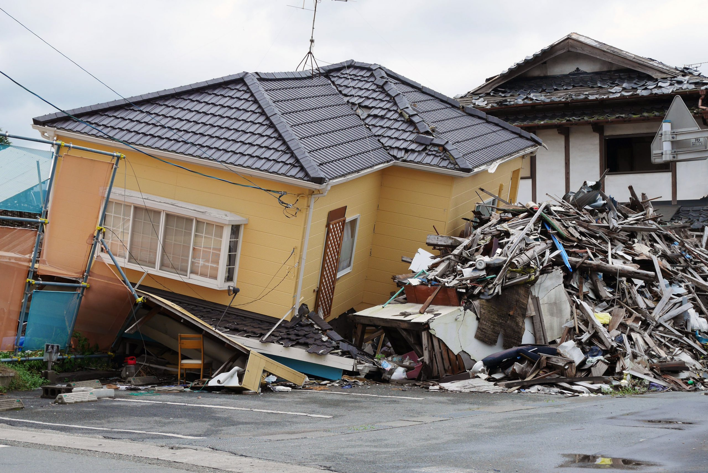
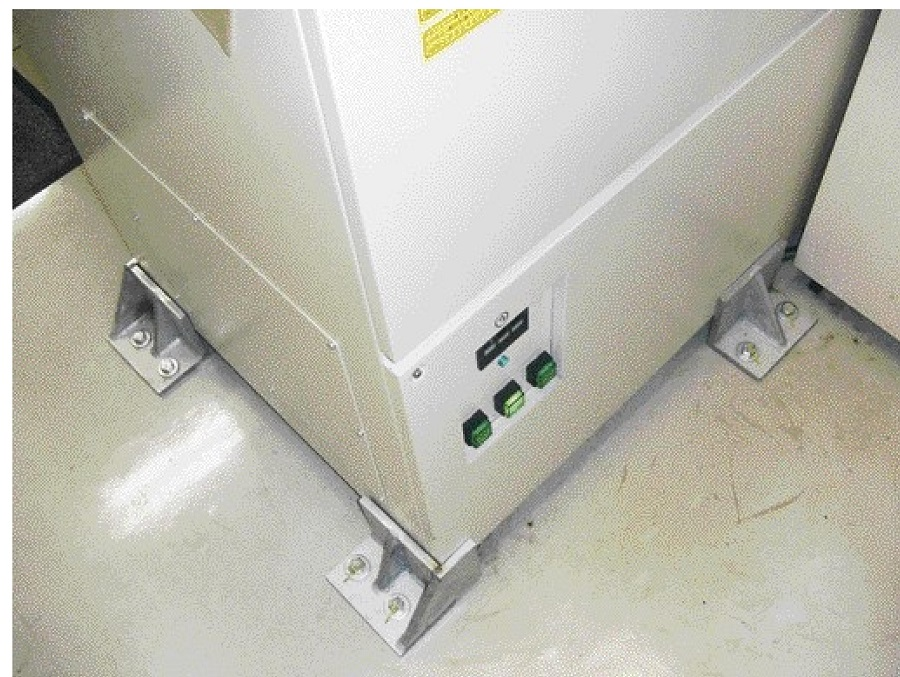
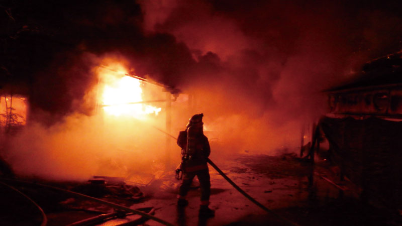
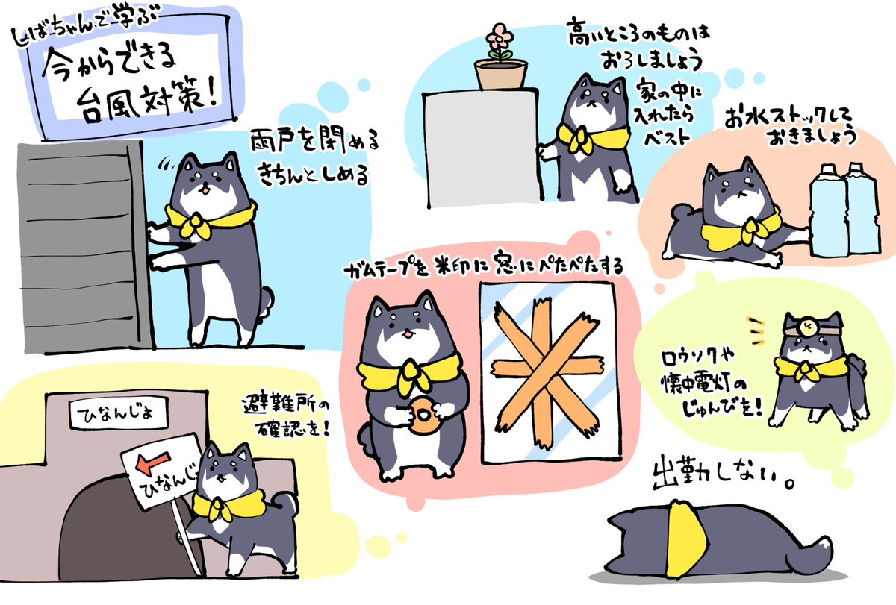
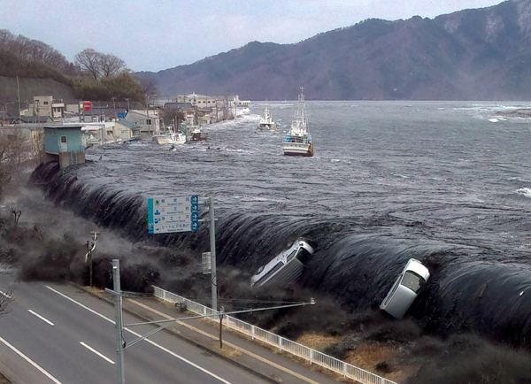
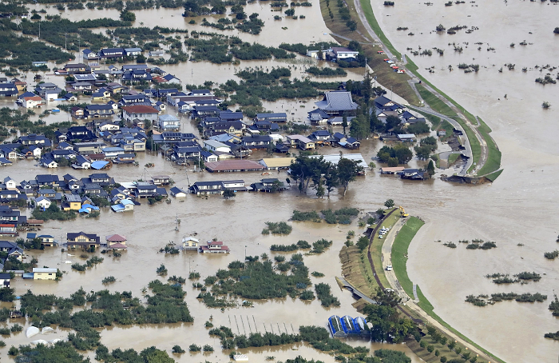
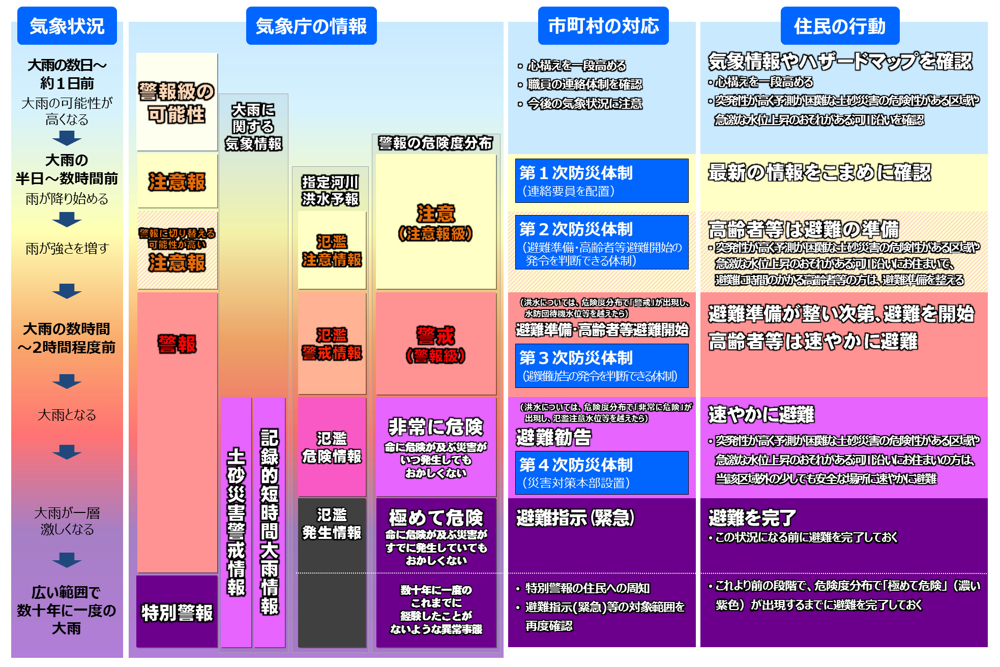
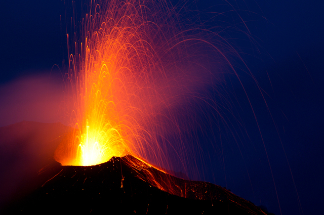
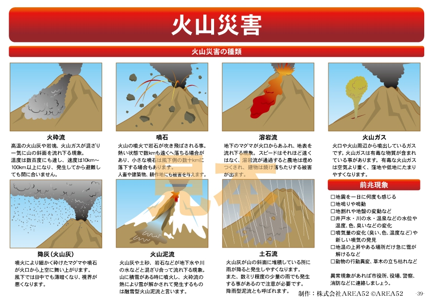

・屋内にいる時
突然大きな揺れがきた時は、まず自分の身の安全を守りましょう。
丈夫なテーブルや机の下にもぐり、脚をしっかり握ります。また、座布団やクッションなどで頭を保護して、揺れが収まるのを待ちましょう。
・寝ている時
揺れで目が覚めたら、ベッドの下などにもぐりこんで身の安全を確保します。暗闇では割れたガラスや照明器具の破片でケガをしやすいので注意しましょう。
・トイレ・お風呂
揺れを感じたら、まずドアを開けて避難路を確保し、揺れが収まるのを待ちましょう。
風呂場ではタイルや鏡、トイレでは水洗用のタンクが落ちてくることがあるので気をつけます。いざという時は、風呂のふたなどをかぶって頭部を守りましょう。
・キッチンにいる時
調理中に地震が起きた場合、慌てて火を消しに行くと、調理器具が落ちてきてやけどする危険があります。
コンロやストーブの火は、揺れが収まってから落ち着いて止めるようにしましょう。最近では、揺れを感知すると自動的に火が止まる仕組みも普及しています。
・屋外にいる時
家の塀や電信柱、自動販売機など、崩れたり倒れてくるかもしれないものからは離れるようにしましょう。
ビルが多いところだと上から窓ガラスの破片やカンバンなどが落ちてくるかもしれないので注意。
カバンや上着で頭を守りながら、公園や空き地などの安全な場所に避難しましょう。
・エレベーター内
全部の階のボタンを押して、いちばん早く止まった階で脱出します。
万が一、閉じ込められた場合には、非常用のインターホンなどを使い、外部と連絡を取りましょう。
・車内
急ブレーキ、急ハンドルは危険です。
ハザードランプを点灯して徐々にスピードを落とし、道路の左側に停車して揺れが収まるのを待ちます。
車から離れる際は、緊急車両の通行の妨げにならないよう鍵をつけたままにしましょう。
1.火を消す
・揺れが収まったら火を消す。
・火が消えていてもガスが漏れている場合があるので、ガスの元栓も閉める。
2.落下物や足元に注意
・歩くときは、落下物や散乱したガラス・蛍光灯の破片などに注意する。
・家の中を歩くときもヘルメット等で頭を保護し、靴を履くなどする。
・近くにヘルメットや靴がない場合は、鍋やスリッパ等で代用する。
3.暖房器具を消す
・揺れによりストーブなどの暖房器具が倒れている可能性があり、火災の原因になるので確認する。
・電気が復旧したら、暖房器具が勝手につき、火災の原因になる場合もあるためコンセントを抜く。
4.ブレーカーを切る
・停電の場合
避難中に電気が復旧する可能性があり、通電火災を防ぐためブレーカーを切る。
・停電していない場合
漏電による火災の可能性があるため、ブレーカーを切る。
・下敷きになったら
家具の下敷きになってしまったら、大声で助けを求める。
多くの人たちが駆けつけてくれれば、その分助け出される可能性が高まる。
助け出す立場になったとしても、一人で解決せずに近所の人たちと力を合わせて救出する。
・火災が発生したら
出火したら常備してある消火器で初期消火を行う。
1本の消火器で消せなくても、数本あれば消せる場合もあるため、「火事だ！」と大声で叫び近所の人たちに知らせる。
※個人でできるのは 初期消火まで。大きな火災の場合は、逃げることを最優先に考える。
・非常用品はリュックに入れる
ものを持ち出す場合には、両手が使えるようにリュックなどを利用する。
身軽に避難できるように最低限のものだけを持ち出す。
情報を収集するためのラジオや携帯電話、懐中電灯、非常食、軍手などを必ず事前に準備して、すぐ持ち出せるようにする。
・徒歩で避難する
避難時には自動車の使用はできるだけ避ける。
自動車での移動は交通渋滞の原因となり、緊急車両の通行の妨げとなるのでなるべく避ける。
道路に亀裂が生じたり、マンホールなどが隆起しているおそれがあるので注意する。
・安全を確保しながら避難する
身の安全を確保しながら避難所に行く。
事前に避難所の場所や危険箇所を記したハザードマップなどを確認しておく。
「災害伝言ダイヤル」や「災害伝言板」などを使い、家族にメッセージを残す。
・近所同士で助け合う
大規模な災害では、家族や近所の人の協力による救助や応急手当が生死を分けるため、お互いの家族構成やライフスタイルを知らせ合うなど、普段からの交流を大切にしましょう。
避難の際も、近所で声をかけ合いましょう。
・余震による二次災害に注意
建物が余震などで崩れてくる可能性があるため、自治体や気象庁が発表する余震情報、危険箇所に関する情報、気象情報に留意する。
急な斜面や家屋にはできるだけ近づかないようにする。
・新しい耐震基準より前に建てられたか確認する
1981年（昭和56年）に耐震基準を定めた建築基準法がより厳しく改正されたため、それ以前の建物は現在の基準に達していないこともあるので耐震診断を受ける必要がある。
1981年以降の建築でも、住まいが老朽化している場合は耐震診断を受けておく。
・揺れやすさを知る
同じ地震でも液状化現象や土砂災害が起きやすいなどの地盤の特性よって揺れの大きさや建物倒壊の危険度が違ってくるため、自治体などが公開している「ハザードマップ」や、政府の「地震のゆれやすさ全国マップ」を確認しましょう。
・家具などの転倒防止策を講じる
過去の地震では家具の転倒によって亡くなるケースが数多くあり、家具などの転倒を防止することが重要。


・早い通報
万が一火災が発生した場合、発見した場合は大きな声で周りの人に知らせる。
落ち着いて119番通報。
・早い消火
出火から3分以内が、消火できる限度だそうです。
消火器だけに頼らず、座布団で火を叩く、塗れた毛布で火を覆うなど、身の回りで使える消火方法をおさえておきましょう。
・早い避難
煙を吸わない
壁や天井に燃え移った場合や身の危険を感じた時は、速やかに避難。
避難時は煙を絶対に吸わないように、細心の注意を払うことが大切です。
濡れたタオルなどで口や鼻を押さえ、低い姿勢で逃げましょう。
煙やススで周囲が見えにくくなっているかもしれませんが、地面に近いほど新鮮な空気や視界が確保されます。
低い姿勢で壁伝いに避難しましょう。
・戻らない
火災建物に戻る、多くの人が逃げる方向に行ってしまわぬよう冷静になるよう心掛ける
・エレベーターに乗らない
もしビルなど複数階がある建物で火事にあった場合、エレベーターを使うのは止めましょう。
閉じ込められて避難できない可能性もあります。必ず階段で移動しましょう。
・外へ出ない
台風の際は、建物内で通り過ぎるのを待つのが基本。
通過しているときは、外へ出ないようにし、河川や用水路の見回りはやめること。
屋根の補修は、台風が近づく前に済ませておく。
・地下施設から地上へ、地上からより高い場所へ避難する
地下施設にいるときは、実際外で降っている雨の状況などが分かりにくく、地上が冠水すると避難路から一気に水が流れ込み、地上に避難することが困難になるおそれがある。
地上に出てからも、指定の避難場所に移動するより近隣の2階以上の丈夫な建物に避難する方が安全な場合もあるため、避難する場合は周囲の状況を総合的に判断し行動する。
・流れている水に近づかない
河川や用水路の水があふれ、その周辺にも激しい水の流れができることがある。
マンホールや用水路のフタが開いているのに気づかず落ちてしまうケースも多くあるため、雨が降っているときは近づかない。
また急な増水のおそれがあるため、雨がやんだ後でも、河川や用水路の周囲だけでなく、流れのある水のそばには決して近づかない。
・エレベーターを使わない
暴風によって送電線が切れ、停電になることもあるため、エレベーターの使用は極力避ける。
・山などの急な斜面には近づかない
大雨による土砂災害の危険度が高まったとき、土砂災害警戒情報が発表される場合がある。
土砂災害警戒情報が発表された場合は、すみやかに避難する。
発表されていなくても、「斜面から小石が落ちてくる」、「湧き水がにごる」などの前兆現象が見られた場合は、安全を確保したうえで避難するとともに、自治体や警察、消防などに通報する。
・避難準備情報が出された場合は、速やかに要援護者の避難を
行政から避難準備情報が出たら、高齢者や乳幼児などの方を優先に、自動車等を使ってすみやかに安全なところに移送する。
高台などの避難所、親類縁者の家、福祉施設等を利用すると良い。
・行政から避難勧告が出た場合は、複数で行動する
行政から避難勧告が出たら、戸締まりをして近所の人に声をかけ、一緒に徒歩で避難する。
運動靴やトレッキングシューズなら、冠水した道路も比較的歩きやすい。
・避難は周囲の状況を確認してから
避難する際は周囲の状況を確認してから避難場所へ向かう。
山などの斜面で以下の現象が発生している場合、直ちに斜面から離れる。
・避難する際の服装
頭を保護するヘルメット等を着用する。
動きやすい長袖と長ズボン、軍手を着用する。
長靴ではなく、普段から履きなれた底が厚めの靴を履く。
両手は空いている状態にし、非常用品等はリュックに入れて避難する。
・避難する際の注意
可能な限り複数人で避難する。
浸水している場合は、傘などの棒状のものを使って地面を探りながら避難する。
夜間に避難するのは大変危険なので、避難はできるだけ明るい時間に行うこと。
鉄筋コンクリート製の建物に避難。その際は斜面から離れたフロアへ
自宅にとどまる場合も、できるだけ高い階の斜面から離れた部屋に
消防、警察、自治体に救助の要請をする

・屋根や家の周りのものにも注意
風で屋根瓦が飛べば、けがでは済まされない事故になることもある。
事前に雨漏りの心配がないか、外壁のひび割れはないかなども確認する。
テレビのアンテナや倒れる可能性のある塀、自転車や鉢植えのように飛ばされるおそれのあるものは、ロープで固定したり屋内にしまったりといった対策をとる。
・事前に排水設備の点検・掃除をする
排水溝のつまりが原因で、道路や庭などに雨水が溜まると、地下室・駐車場などが被害を受ける。
ベランダの排水溝や雨どいが、落ち葉やゴミなどでつまっていると、2階以上への浸水や天井裏への浸水などが発生することがある。
雨水の排水設備関係の点検・掃除を心がける。
・低地の居住者は土のうなどを用意する
低地や川沿いの住居には、浸水をせき止めたり浸水の時間を遅らせたりすることができる土のうの活用も有効。
土のうがないときは、ゴミ袋に水を入れて水のうをつくり、コンクリートブロックで固定する、水の入ったペットボトルをダンボールにつめ、簡易の堤防にするといった代替方法もある。
・上流にダムがある場合
ダムは洪水調節の役割も担ってるため、大雨時には放流量が急激に増えることもある。
放流を予告するサイレン音を聞いた場合、河川には絶対に近づかない。
・居住地域の災害史を学ぶ
過去にどの程度の降水量で浸水や土砂災害に見舞われたのか、など居住地域で発生した災害を学ぶことが重要。
居住地域の災害史を学ぶことで、大まかな目安として災害発生の危険性を降水量から把握することができる。

・大津波警報
予想される津波の高さが、高いところで3mを超える場合。
沿岸部や川沿いにいる人は、ただちに高台や避難ビルなど安全な場所へ避難してください。
・津波警報
予想される津波の高さが、高いところで1mを超え、3m以下の場合。
沿岸部や川沿いにいる人は、ただちに高台や避難ビルなど安全な場所へ避難してください。
・津波注意報
予想される津波の高さが、高いところで20cm以上1m以下の場合であって、津波による災害のおそれがある場合。
海の中にいる人はただちに海から上がって、海岸から離れてください。
・避難は「原則」徒歩
自動車での避難は道路の渋滞に巻き込まれるおそれがあるため、可能な限り徒歩で避難する。
東日本大震災（2011年）では、道路が渋滞し避難者が混乱した。
・「川沿い」を避ける
津波には川の河口から上流に向かって逆流するパワーがあり、河口から数十キロの地点まで津波が遡上したこともある。
沿岸の地形などにより、遡上する距離も変わってくるが、河口から離れた地域でも川沿いを避けるようにする。
・木造の建物には逃げない
木造家屋は、津波による浸水の高さが2ｍ程度になると倒壊することがある。
浸水が1ｍ程度でも半壊の被害が出ることがあるため、木造家屋に住んでいる方は、すぐに高台などの安全な場所へ避難する。
・間に合わない場合は鉄筋コンクリートの建物へ
高台まで距離があり、避難が間に合わないと判断した場合は、鉄筋コンクリート製の建物のできるだけ高い階まで逃げる。
事前に周囲の鉄筋コンクリート製の建物を確認しておきましょう。
・「30cm」の津波でも人間は流される
津波は海底から海面までの水が一気に陸地へ押し寄せる現象なので、たとえ30cmの津波でも、屈強な人でさえ簡単に流されてしまう。
津波は、家や自動車、停泊している船なども簡単に押し流すため、警報や注意報が発表されたらすみやかに高台など安全な場所へ避難する。
・小さな揺れの地震でも津波は押し寄せる
「小さな揺れでは津波は来ない」というのは誤り。
明治三陸沖地震（1896年）では震度4程度の揺れだったが、その後に押し寄せた津波で約2万人を超える方が亡くなったので、沿岸付近に住んでいる方は小さな揺れでも津波に対する警戒が必要。
・津波は何度も押し寄せる
津波は何度も押し寄せ、第2波以降の波が急に高くなることもある。警報や注意報が解除されるまでは、高台などの安全な場所へとどまる。
・引き波に巻き込まれると沖合まで流される
陸地に流れ込んだ津波は、時間がたつと海へ戻ろうとする。その力は大きく、街中の物が沖合まで流されてしまうこともある。
・ハザードマップで浸水エリアを確認する
津波による浸水被害が想定されている地域では、自治体がハザードマップを作成しているので、事前に浸水地域や避難場所、避難経路などを確認する。
※ただし、ハザードマップはあくまで「予想」であるため、予想を超えた津波が押し寄せた場合は、浸水エリアが大幅に拡大するおそれがある。
気象庁から警報や注意報が発表された場合は、すみやかに高く安全な場所へ避難するなど、安全を最大限考慮した行動が重要。

・集中豪雨とは
集中豪雨は、梅雨前線の停滞や台風の接近等を原因として、狭い範囲に数時間に渡って降る大量の雨のことを指します。
このような局地的な大雨は、険しい山や急流が多い日本では、河川の氾濫や土砂災害を引き起こし、また建物の浸水や道路の冠水といった洪水被害が発生する危険があります。
・手中豪雨の覚えておくべき５つの特徴
1 梅雨期の終わり頃等、日本付近に前線が停滞しているときに集中豪雨になりやすい。
2 台風が日本へ接近しているときや上陸したとき、集中豪雨を伴うおそれがある。
3 日本では、1976年～2020年にかけて、1年間の内、1時間に50mm以上の雨が降る回数が増加している。
4 空が真っ暗になる、雷鳴や稲妻が起きるといった現象は、集中豪雨の前兆にあたる。
5 天気予報で「大気の状態が不安定」「天気の急変」等の表現があるときは注意が必要
・土砂災害の恐れのある区域は全国に67万区域もある
険しい山が多い日本は、崖崩れや土石流、地すべり等が発生しやすく、土砂災害が発生するおそれのある危険区域は全国に約67万区域にものぼると推計されています。
国土交通省のサイトに掲載されている「土砂災害危険箇所」等を確認し、土砂災害の危険性がある地域を事前に確認しておきましょう。
・完遂した道路では、マンホールに注意
集中豪雨は、市街地や地下鉄・地下街等の地下空間の浸水や交通機能の混乱等の被害を引き起こします。道路では、大量の雨水が下水管に流れ込むとマンホールのふたが浮き上がり、外れてしまうこともあるため、転落を防ぐためにも、冠水した道路を歩くのは絶対やめましょう。
・地下や半地下は逃げ遅れる可能性あり
地下や半地下等は、浸水の水圧でドアが開かなくなり、逃げ遅れる危険があるため、指定の避難場所、または2階以上の建物等の安全な場所へ避難しましょう。
た、雷が発生した際は、鉄筋コンクリート建築の建物や自動車（※）・バス・列車の内部等が比較的安全な空間です。
・天候の変化に注意する
「急に真っ黒な雲が近づいてくる」「雷鳴が聞こえる」「稲光が見える」といった天候の急変は、集中豪雨につながる「発達した積乱雲」が近づいている兆しになります。
天気予報での、大雨や洪水の警報・注意報や雷注意報はもちろん、「大気の状態が不安定」「天気の急変」等の表現にも注意しましょう。
・発災直後 「水納」を作って浸水を防ぐ
ゴミ袋に半分程度の水を入れれば、土のうの代わりの「水納」を作ることができます。
トイレや風呂場、洗濯機の排水口等から水が噴き出る場合があるので、水のうを置いて逆流を防ぎましょう。
土を入れたプランターや水を入れたポリタンクをレジャーシートで巻き込み連結することでも止水を行うことができます。
・避難時は、服装と持ち物に注意する
洪水の避難時は、上下が分かれているレインコート等、動きやすい服装を心掛け、軍手やヘルメットを身に着け、長靴ではなく、ひもで締められる運動靴かトレッキングシューズを履くようにしましょう。
・完遂時の道路に注意する
大雨によって氾濫の危険性がある河川や用水路には近づかないようにしましょう。
地面より低い道は冠水する危険があるので通らないようにし、また浸水被害を受けやすい地下・半地下から避難することが大切です。
ふたが外れたマンホールに転落する危険性があるので、冠水した道路には近づかないようにしましょう。

火山噴火とは、火山の火口が開き、地球の地下深部で発生したマグマや火山灰等が地表に噴出する現象のことです。
火山の活動の寿命は長いことから、現在休止している火山を含め、過去に噴火記録のある火山や今後噴火する可能性がある火山は、すべて「活火山」と分類されるようになりました。
・火山の噴火の覚えておくべき５つの特徴
1.火山噴火が起こると、直径50センチ以上の大きな噴石が落ちてくることがある。
2.火山噴火では、高温の火山灰や岩魂等が一体となった火砕流が駆け下りてくることがある。
3.日本の火山は、海溝と呼ばれるプレートの境目にほぼ並行に分布している。
4.気象庁の「火山噴火予知連絡会」により、火山噴火予知の研究が行われている。
5.大地震は火山噴火を誘発する可能性があり、数年たってから噴火するケースもある。
・火山は数百キロメートル先まで飛ぶことがある。
火山が噴火すると、噴石と呼ばれる石のほかに、細かい火山灰等が噴出され、数十、数百キロメートル以上も遠くまで飛ぶことがあります。
火山灰が降ることを「降灰（こうはい・こうかい）」といい、降灰は周辺に住む人々の社会生活に深刻な影響をおよぼします。
・日本の活火山の数は「１１１」もある！
火山が噴火すると、噴石と呼ばれる石のほかに、細かい火山灰等が噴出され、数十、数百キロメートル以上も遠くまで飛ぶことがあります。
火山灰が降ることを「降灰（こうはい・こうかい）」といい、降灰は周辺に住む人々の社会生活に深刻な影響をおよぼします。
・火山灰の被害は、飛行機やコンピューターにも！
火山灰が飛行機のエンジンや電子機器の吸気口から吸い込まれると、内部に付着し、誤作動や故障を招くことがあります。
降灰期間中、家庭では、ガス湯沸かし器やエアコン等、外気にさらされる電化製品は使用せず、火山灰が入らないようにラップフィルムをするなどして、対策を取りましょう。
・健康被害をもたらす火山灰
火山灰は、呼吸器系への影響、目の症状、皮膚への刺激等、健康にも影響を与えます。
鼻やのどの炎症、ぜんそく、目の異物感・かゆみ・充血、皮膚の痛み・腫れ等を防ぐためにも、事前にマスクやゴーグル、タオル、長袖・長ズボン等を身に着けるようにしましょう。
・火山灰は水で溶けない
火山灰は重く、水に溶けないため、処理が非常に難しいです。
。鹿児島県の桜島等では、自治体が火山灰用のゴミ袋を用意し、定期的に収集が行われています。
山灰により排水管が詰まり、下水処理施設を傷めるおそれがあるため、排水溝や下水、雨水管に流さないようにしましょう。

・事前準備
気象庁では、全国111の活火山の観測・監視の成果を用いて、火山活動の評価を行い、周辺に危険をおよぼすような噴火が予想される場合には、「警戒が必要な範囲」を明示して噴火警報を発表しています。
身近にある活火山を知り、また警報に注意することで、火山噴火の防災に役立てましょう。
・降灰に備える
火山灰が降り続き、長期に渡って外出できなくなる場合に備えて、事前に飲用水や保存食を準備しておくと、被災時に役に立ちます。
飲用水（1人あたり1日約3リットル）と、家族とペット用の保存食は、最低3日分を目安に準備しておきましょう。
また、外気に触れる電化製品には食品用ラップフィルムを貼るなど、事前に対策を取ることで、火山灰からの被害を軽減することができます。
・発災直後火山灰から目や呼吸器を守る
火山灰が人の目に入ったり、多量に吸い込んだりすると、健康被害につながるおそれがあるので、降灰がひどいときは外出を控えましょう。
呼吸器系や目への影響を避けるため、マスクやゴーグルを着用し、コンタクトレンズの使用は極力控えることが大切です。
・火山灰を処理するときの注意点
屋根に積もった火山灰を濡らし過ぎると、屋根に重さがかかり、家がつぶれる危険があります。火山灰の処理は、屋根に数センチ以上降り積もる前に行いましょう。
火山灰を排水溝や下水、雨水管に流すと、配水管が詰まり、下水処理施設を痛めてしまうおそれがあるため、適切な処理が必要です。
